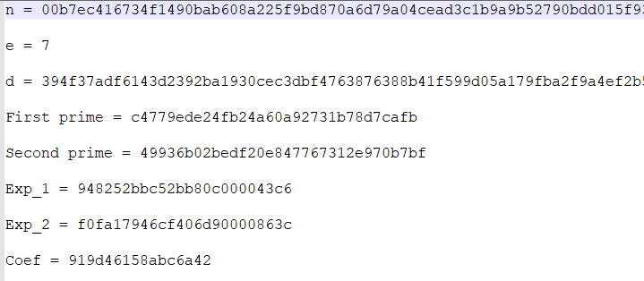

Crypto
参考WriteUp: https://github.com/ziyedbe/hackzone2019/tree/master/MeSS
提供的压缩包里包含了140个key文件和1个cipher文件
key文件内容形如：

cipher内容为Decimal形式。
使用如下脚本去寻找所有key文件里是否有相同n的
1 | #encoding:utf-8 |
找到了两个相同n的key：
9hpUS3qszH.key
1 | n = 00b3d6bd85c58f72c351318961a9bc77b5c27e93a37eebaf66ccf9daa31d6dc0e6ab03e55c6ba06bbf31c77bb9e4eb3b245abeb8750ea9eabe2a2f0a761d72c9ea58a84bf6131ea2c4610418dded3a659829c42bba3ecac7160297cc9227c9267260bbf61d93fc8ce755a284f3135568e571b453d5fe40f64c2c897446a089c47683a21662d50353236ee9cd8ccff24407fda2af4fc3fde5e56ae83b6c4dfa7c51ef962d295a289364ce7b14373d1f784f406baedf32774873334bca1321555981848684337fc6080f0f8ff20710775029974b40601ab1b9953370af7466510db4603a482b1fd35eba28dd9ae2141c16ef2f0b1a219fd3ac69f4dc8bd71ef722a9 |
f3elfj6rlU.key
1 | n = 00b3d6bd85c58f72c351318961a9bc77b5c27e93a37eebaf66ccf9daa31d6dc0e6ab03e55c6ba06bbf31c77bb9e4eb3b245abeb8750ea9eabe2a2f0a761d72c9ea58a84bf6131ea2c4610418dded3a659829c42bba3ecac7160297cc9227c9267260bbf61d93fc8ce755a284f3135568e571b453d5fe40f64c2c897446a089c47683a21662d50353236ee9cd8ccff24407fda2af4fc3fde5e56ae83b6c4dfa7c51ef962d295a289364ce7b14373d1f784f406baedf32774873334bca1321555981848684337fc6080f0f8ff20710775029974b40601ab1b9953370af7466510db4603a482b1fd35eba28dd9ae2141c16ef2f0b1a219fd3ac69f4dc8bd71ef722a9 |
可见两个key的n一致，而且f3elfj6rlU.key没有私钥(n , d)
于是可以猜想cipher文件可能就是f3elfj6rlU.key文件加密生成的。
因此可以通过9hpUS3qszH.key分解n求得p和q用于f3elfj6rlU.key
分解之前首先使用在线转换工具将上面的Hex形式的n和d转换为Decimal形式
推荐使用https://www.rapidtables.com/convert/number/hex-to-decimal.html
直接使用yafu或者sage等分解n在这里是行不通的
这里知道了e,d,n可以使用下面的脚本进行分解。
脚本摘录如下：
1 | import fractions #for gcd function (or easily implementable to avoid import) |
得到p和q
root@automne:/Pentest/CTF# python RecoverPrimeFactors.py
Found factors p and q
p = 147504216621469380189409215874248864722589246550249379639840285872093233515595729240033319188381256063459342484480536624408619622982123945727439636240158758189207656414303429995920517843643171968009969688682973266810282225644661133313966156163713808164749325692764355471603647680864498925757106384432867755327
q = 153911186463541828405348779050505772007052654252098126319906724330785601180476549150297007215613778549116636075023789423035124242659679051063611847192928471457949573015601406901727072212522607132879243268324932705944030880046781379065510811111157918933296379352833989404101863466218445331033866033394766583319
然后使用sage
首先计算欧拉函数phi
sage: phi = (p-1)*(q-1)
sage: phi
22702548988585639637851431705875336575429862255188645528887111724338807108889571748597184000150880723937377646354782096179701969674522159233980700069669264159299994181571326564481560158416010897880474527515788236201435179106261470748150803007008802283045789226818457497417965570752028940845456738725432663418299304339756271135036718479872033481916344990522047748622040249289994470860126620189602016941983964665374451423453619510312414328148790992702466290510135858066605143358102081795356174477044376551200933195794751767766775137766230058286351943528601152987737749764285603759664768250343502333313668668577017251668
接着求出d
sage: e = 257
sage: d = inverse_mod(e,phi)
sage: d
6536920720448783397669283837489396523664629598770271475243759796113119556645246340063002396930603788215431695837563716409719633291496652853364092627064301742366535289635323602224262458065310530907218346444234745054109740287406026596743810982562845793561822578928271808595056234379961640554722952006544813591261278292381183128376331391091558278839725794936309468474828709912294127796301050171325094372400052082637001577181197835654158211217939818910437764582685033061979691083655852345744579421405773792952797885170473271652690117489109044020194723039363756113200752850416866452199193970916027909203157515465755940169
最后根据密文c得到flag
sage: flag = pow(c,d,n)
sage: flag
225867495516870385052319556599900461280701497334325927913753050855739983596381901143880117407592338807453086386821505176563420351178669173584377213
此时的结果是Decimal形式，直接转ASCII是乱码，需要先转为Hex形式
推荐使用：https://www.rapidtables.com/convert/number/decimal-to-hex.html
最后再将Hex转为ASCII，即可得到flag
https://www.rapidtables.com/convert/number/hex-to-ascii.html

flag为：
HZVII{uN7rUst3D_uniQue_k3yZ_0bViousLy_CoMMoN_m0Dulu5_A77aCk5}